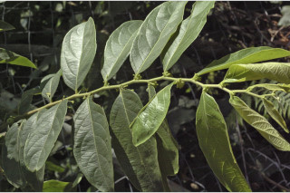
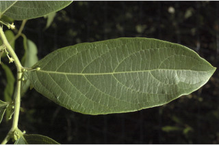
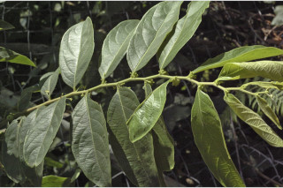
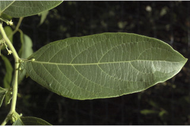
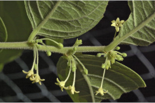
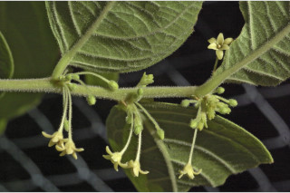

Bark brown, scaly when mature; blaze pink.
ತೊಗಟೆ ಕಂದು ಬಣ್ಣದಲ್ಲಿದ್ದು, ಬಲಿತಾಗ ಚಕ್ಕೆ ಮಾದರಿಯಲ್ಲಿರುತ್ತದೆ;ಕಚ್ಚು ಮಾಡಿದ ನಸುಗೆಂಪು.
Bark brown, scaly when mature; blaze pink.
மரத்தின் பட்டை ப்ரவுன், முதிரும் போது செதில்களாக உதிருபவை; உள்பட்டை பிங்க் நிறமானது.
Branchlets terete, tomentose.
ಎಳೆಯ ಕಿರುಕೊಂಬೆಗಳು ದುಂಡಾಗಿದ್ದು, ದಟ್ಟ ಮೃದು ತುಪ್ಪಳ ಸಹಿತವಾಗಿರುತ್ತವೆ.
Branchlets terete, tomentose.
சிறியநுனிக்கிளைகள் குறுக்குவெட்டுத் தோற்றத்தில் வளையமானது, உரோமங்களுடையது.
Leaves simple, alternate, distichous; stipule caducous and leaving scar; petioles up to 0.5 cm long, planoconvex in cross section, tomentose; lamina 14.5 x 5 cm, ovate to elliptic-oblong, unequal sided, apex acute with mucronate tip, base asymmetric, margin entire, tomentose beneath; secondary_nerves 6-8 pairs, nerves hairy on both surfaces; tertiary_nerves horizontally percurrent.
ಎಲೆಗಳು ಸರಳವಾಗಿದ್ದು, ಪರ್ಯಾಯ ಜೋಡನಾ ವ್ಯವಸ್ಥೆಯಲ್ಲಿದ್ದು ಕಾಂಡದ ಎರಡೂ ಕಡೆ ಎದುರು ಬದರಿನ ಲಂಬ ಸಾಲಿನಲ್ಲಿರುತ್ತವೆ;ಕಾವಿನೆಲೆಗಳು ಉದುರಿ ಗುರುತುಗಳನ್ನು ಉಳಿಸುತ್ತವೆ;ತೊಟ್ಟುಗಳು 0.5 ಸೆಂ.ಮೀ. ವರೆಗಿನ ಉದ್ದವಿದ್ದು ಅಡ್ಡ ಸೀಳಿದಾಗ ಸಪಾಟ ಪೀನ ಮಧ್ಯದ ಆಕಾರ ಹೊಂದಿರುತ್ತವೆ,ದಟ್ಟ ಮೃದುಪ್ಪಳ ಸಹಿತವಾಗಿರುತ್ತವೆ;ಪತ್ರಗಳು 14.5 X 5 ಸೆಂ.ಮೀ. ಗಾತ್ರ ಹೊಂದಿದ್ದು ಅಂಡಕಾರದಿಂದ ಅಥವಾ ಅಂಡವೃತ್ತ- ಚತುರಸ್ರದ ಆಕಾರ ಹೊಂದಿದ್ದು,ಪಾಶ್ವಗಳು ಅಸಮವಾಗಿದ್ದು, ಅಗ್ರದಲ್ಲಿ ಮೊನಚುಮುಳ್ಳನ್ನು ಹೊಂದಿದ ಚೂಪಾದ ತುದಿ, ಅಸಮ್ಮಿತಿಯಾದ ಬುಡ, ನಯವಾದ ಅಂಚು ಹೊಂದಿದ್ದು ತಳಭಾಗದಲ್ಲಿ ದಟ್ಟ ಮೃದುತುಪ್ಪಳ ಸಮೇತವಿರುತ್ತವೆ; ಎರಡನೇ ದರ್ಜೆಯ ನಾಳಗಳು 6 ರಿಂದ 8 ಜೋಡಿಗಳಿರುತ್ತವೆ, ಪತ್ರಗಳ ಎರಡೂ ಬದಿಯ ನಾಳಗಳು ರೋಮಸಹಿತವಾಗಿರುತ್ತವೆ;ಮೂರನೇ ದರ್ಜೆಯ ನಾಳಗಳು ಲಂಬ ರೇಖೆಗೆ ಸಮಕೋನದಲ್ಲಿದ್ದು, ಎಲೆಯ ದಿಂಡಿಗೆ ಅಡ್ಡವಾಗಿ ಕೂಡುತ್ತವೆ.
Leaves simple, alternate, distichous; stipule caducous and leaving scar; petioles up to 0.5 cm long, planoconvex in cross section, tomentose; lamina 14.5 x 5 cm, ovate to elliptic-oblong, unequal sided, apex acute with mucronate tip, base asymmetric, margin entire, tomentose beneath; secondary_nerves 6-8 pairs, nerves hairy on both surfaces; tertiary_nerves horizontally percurrent.
இலைகள் தனித்தவை, மாற்றுஅடுக்கமானவை, இருநெடுக்கு வரிசையிலையடுக்கம் (டைஸ்டிக்கஸ்); இலையடிச்செதில் எளிதில் உதிரக்கூடியது மற்றும் தழும்புகளை ஏற்படுத்துகின்றன; இலைக்காம்பு 0.5 செ.மீ. நீளமானது, குறுக்குவெட்டுத் தோற்றத்தில் பிளேனோகான்வக்ஸ், உரோமங்களுடையது; இலை அலகு 14.5 x 5 செ.மீ., முட்டை வடிவானது முதல் நீள்வட்டம்-நீள்சதுர வடிவானது, இரு பக்கங்களும் சமமற்றது, அலகின் நுனி கூரியதுடன் அதன் முனை மூயூக்கரனேட், அலகின் தளம் சமமற்றது, அலகின் விளிம்பு முழுமையானது, அலகின் கீழ்பரப்பு உரோமங்களுடையது; இரண்டாம் நிலை நரம்புகள் 6-8 ஜோடிகள், அலகின் மேற்பரப்பு மற்றும் கீழ்பரப்பு உரோமங்களுடையது; மூன்றாம் நிலை நரம்புகள் விளிம்பு நோக்கிய பெர்க்கரண்ட்.
Inflorescence axillary clusters, tomentose; flowers unisexual, monoecious.
ಪುಷ್ಪಮಂಜರಿ ಅಕ್ಷಾಕಂಕುಳಿನಲ್ಲಿನ ಗುಚ್ಛಗಳಾಗಿದ್ದು, ದಟ್ಟ ಮೃದುತುಪ್ಪಳ ಸಹಿತವಾಗಿರುತ್ತವೆ; ಹೂಗಳು ಏಕಲಿಂಗಿಗಳಾಗಿದ್ದು ಹೆಣ್ಣು ಮತ್ತು ಗಂಡು ಹೂಗಳು ಒಂದೇ ಸಸ್ಯದಲ್ಲಿರುತ್ತವೆ.
Inflorescence axillary clusters, tomentose; flowers unisexual, monoecious.
மஞ்சரி இலைக்கோணங்களில் தொகுப்பாகமைந்தவை, உரோமங்களுடையது; மலர்கள் ஓர் பாலானவை, ஒரகம் கொண்டவை.
Capsule depressed, 3-6 locular, lobed.
ಸಂಪುಟ ಫಲಗಳು ಅದುಮಿದಂತಿದ್ದು, 3 ರಿಂದ 6 ಕೋಶಗಳನ್ನೊಳಗೊಂಡಿದ್ದು, ಹಾಲೆಗಳ ಸಮೇತವಿರುತ್ತವೆ.
Capsule depressed, 3-6 locular, lobed.
வெடிகனி (கேப்சியூல்), அழுத்தப்பட்ட வடிவமானது, 3-6 அறைகளுடையது.

 



 
